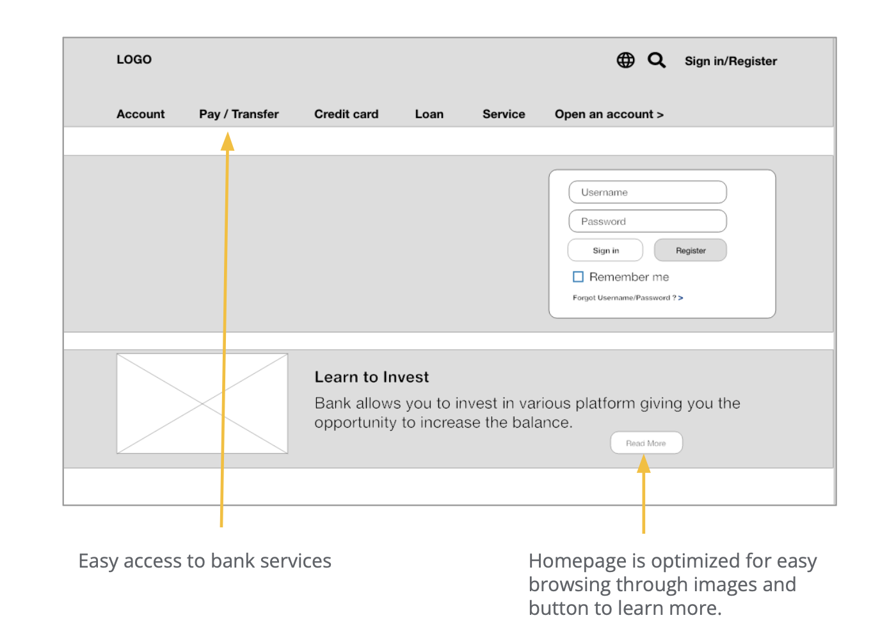

Banking Responsive Website


The Product
ABC Bank is the first bank in America providing transparency in our offerings. The typical user is between 19-50 years old, and most users are college students or early career professionals. ABC Bank goal is to help client send and track money reliably from anywhere.
Tool Kit: Adobe XD, Figma, Pencil and Paper
Project Duration: Sep 2023 to Dec 2023


The Problem
Available online transfer websites have more information than needed making it a cluttered designs, no tracking updates and confusing checkout processes. In America nearly 30% of respondents reported that they opted not to use mobile payments on at least some occasions which states that users are still having hard time to trust this platforms.
My Role
UX designer leading the ABC Bank website design
The Goal
Design a ABC Bank website to support financial cause, in solving problems like fast checkout process with tracking updates and user friendly by providing clear navigation.
My Responsibility
Conducting interviews, paper and digital wireframing, low and high-fidelity prototyping, conducting usability studies, accounting for accessibility, iterating on designs and responsive design.
User Research: Understanding users
Traditional banking websites are overwhelming and confusing to navigate, which frustrated many target users leading to frustration and high drop off rates. Hence, I conducted user interviews, which I then turned into empathy maps to better understand the target user and their needs. I conducted research with 5 users and it revealed that 80% struggled with tracking their transactions, highlighting a significant pain point in the current banking experience.
I discovered that many target users want easy and fast way to transfer money from any location.
User Research Pain Points
Navigation
Banking website have too many information which results in confusing navigation
Interaction
Small buttons on banking websites make item selection difficult, which sometimes leads users to make mistakes
Experience
Online banking websites don’t provide an engaging browsing experience
User Persona
Jack is a Dentist living in America who needs a transparent banking website because he needs to transfer money to their parents every month in China.

Jack Wong
Age:27
Education: Bachelor's Degree
Hometown: San Francisco
Family: Single
Occupation: Dentist
“Sending money is super easy these days but having a tracking updates would have made it much safer”
Goals
- Send money monthly
- Have tracking updates
Frustations
- Scared if the money reached safely
- Continuous check on the transfer
Jack is a Dentist who was born in China but lives in America. He lives far away from his parents and sends them money monthly for their expense. It’s been 5 years since he’s sending money but always get anxious until the money reached. He only gets message once the money is delivered. He wish to have some sort of tracking updates.
User Journey Map
The user journey map was necessary to understand Jack's experience while interacting with the site, as it helped in identifying pain points and uncovering opportunities to enhance the user experience.
| Action | Open app | Transfer money | Add details | Send | Take a screenshot |
|---|---|---|---|---|---|
| Task List |
|
|
|
|
|
| Emotions | Happy to send them money | Feeling normal | Focused on filing the right information | Scared about not receiving an email | Scared and trying to comfort himself |
| Improvement Opportunities | Have a auto-payment set | Auto-fill suggestion | Option to save the information to send again | Receive tracking updates | Option to save the receipt |
Paper Wireframes
To address user pain points related to tracking updates, browsing, and checkout flow, I started by sketching out paper wireframes for the screen in my app. These initial designs allowed me to visualize and iterate on the user experience early in the development process. For the home screen, I explored multiple variations, each focusing on optimizing the browsing experience. This iterative approach ensured that the final design would be intuitive and user-friendly, catering to the needs of the bank's customers.
Because ABC Bank customers access the site on a variety of different devices, I started to work on designs for additional screen sizes to make sure the site would be fully responsive.
Digital Wireframes
Transitioning from paper to digital wireframes clarified how the redesign could effectively address user pain points and enhance the overall user experience. I prioritized the placement of useful buttons and visual elements on the home page, ensuring an intuitive and seamless navigation experience. This strategic approach was crucial in creating a user-friendly interface that meets the needs of the bank's customers.
Digital wireframe screen size variations
Low-fidelity Prototype
In developing the low-fidelity prototype, I connected all screens involved in the primary user flow, such as adding details and making transfers. I sought feedback from my team on button placement and page layout, and I carefully incorporated their suggestions to better address user pain points.
View Low-Fidelity PrototypeUsability Studies
Image
80% of user wanted less text more pictures were added which was repeating page for users
Zelle
60% of user were curious is zelle account and checking account was same thing as they had same account number and had same option like other transaction
Transfer
All users were receiving the same receipt for all transfer
Mockups
Before Usability Study
Based on the insights from the usability study, I made changes to improve the site’s checkout flow. One of the changes I made was adding small text and a button on the side of the image so that it’s easier for user to navigate. This allowed users more freedom to browse the other services provided by bank while transfering.
To make the checkout flow even easier for users, I added Transaction number on top that drawed the user attention.
Reduced the number of pages that user had to go through and combined in one page.
After Usability Study
High-fidelity Prototype
Building the high-fidelity prototype involved refining the visual design and interactions based on the low-fidelity feedback. I focused on creating a polished, detailed version of the app that closely mimics the final product. This stage allowed me to fine-tune the user experience and ensure all elements were aligned with user needs and expectations.
View the ABC BankAccessibility
1
Included clear and consistent labeling for form fields and buttons to improve usability for screen reader users
2
Ensured color contrast and text size options are adjustable to enhance readability for users with visual impairments
3
Designed responsive layouts that adjust to different devices and screen sizes, ensuring accessibility across various platforms
Takeaways
Impact
Feedback from our users highlighted that the interface was user-friendly and aesthetically pleasing, effectively guiding them through the transaction process. The use of images and clear text enhanced the overall user experience and ensured seamless navigation.
What I learned
This project taught me the significance of minor design adjustments and their profound effect on user satisfaction. The primary insight I gained was the necessity of aligning design strategies with genuine user requirements to create effective solutions.